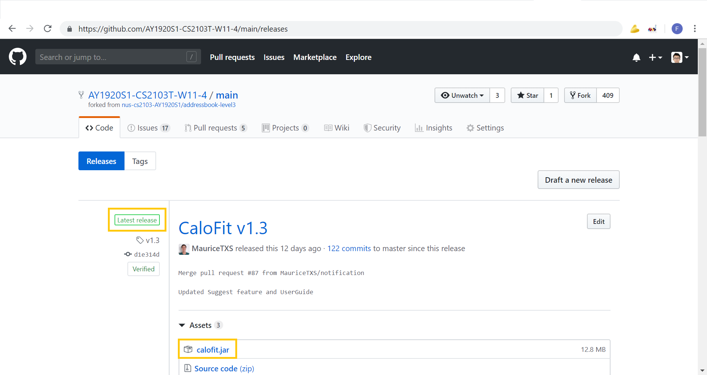
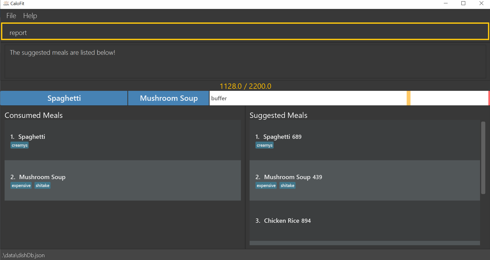

By: Team AY1920S1-CS2103T-W11-4 Since: Sep 2019 Licence: MIT
1. Introduction
CaloFit is suitable for those who prefer to track their calories gained from day-to-day meals. CaloFit is primarily uses a Command Line Interface(CLI) while still displaying the results through a Graphical User Interface(GUI). You can set your daily calorie target and CaloFit will do its best to help you stay on track.
2. Quick Start
Here are the steps to download CaloFit and start using it immediately!:
-
Ensure you have Java 11 or above installed in your Computer.
-
Go to our [GitHub Releases page] and find our latest release! An example is shown in the picture below.
 -
Download the latest version of CaloFit by clicking on the .jar file.
-
Open Calofit and start using it now!
Refer to Section 3, “Features” for details of each command.
3. Features
Command Format
-
Words in
UPPER_CASEare the parameters to be supplied by the user e.g. inadd n/MEAL_NAME,MEAL_NAMEis a parameter which can be used asadd n/Carbonara. -
Items in square brackets are optional e.g
add n/MEAL_NAME [c/CALORIES]can be used asadd n/Carbonara c/430or asadd n/Carbonara.
3.1. Meal Tracking
3.1.1. Adding a meal: add
Adds a meal that the user ate to be tracked by CaloFit.
There are 2 formats that can be used:
Format 1: add n/MEAL_NAME [c/CALORIES] [t/TAGS]
Inputting calories of the meal is optional.
If the meal is a dish stored in CaloFit, the calories will be taken from CaloFit. If not, a default value of 700 will be added for you,
Tags are completely optional and there is no default tag. You could also have more than 1 tag.
Format 2: add NUMBER_IN_SUGGESTED_MEAL_LIST [NUMBER_IN_SUGGESTED_MEAL_LIST] …
NUMBER_IN_SUGGESTED_MEAL_LIST is the number that corresponds to the meal in suggested list on the right side of the application.
You can also add multiple meals at one go using the indexes. This can be done by separating the numbers with a space.
e.g. add 1 2 3
| MEAL_NAME can only be a maximum of 30 characters to ensure it displays correctly for you. |
Examples usage:
It is lunchtime and you are about to go have some Mushroom Soup.
You would like to add the meal into CaloFit to record it down. What do you do?
If format 1 is your preferred choice, you could do the following:
-
Type
add n/Mushroom Soupinto the command bar and press theenterkey.
-
If calofit has the information for the meal (Mushroom Soup in this case), it will grab the relevant information and update the meal log accordingly. The meal that is added will be shown in the result window.
-
If CaloFit does not have the information, and the information is not provided, the default calorie information will be 700 calories
If format 2 is your prefered choice, you could do the following:
-
Type
find mushroom soupinto the command bar and press theenterkey.
-
If the meal exist in our meal database, it will show up under the suggested meals header.
-
Afterwards, enter the command
add 1to the command bar and press theenterkey.
-
The meal "Mushroom Soup" will then be added to the consumed meals.
Commands below are come other example commands:
-
add n/Spaghetti c/480 t/tasty- Adds a meal named Spaghetti of 480 calories with the tag "tasty". -
add n/Chicken Rice c/500- Adds a meal named Chicken Rice of 500 calories. -
add n/Mushroom Soup- Adds a meal named Mushroom Soup of 700 calories by default. -
add 1- Adds the first meal shown under the suggested meal section. -
add 1 2 3- Adds the first and second meal shown under the suggested meal section.
3.1.2. Editing previous meal entry : edit
Edits a meal that the user previously ate today.
Format: edit MEAL_NUMBER [n/NAME] [c/CALORIES] [t/TAGS]
The input of at least 1 field (either NAME, CALORIES or TAGS) is required.
A mix of the different fields is possible as well.
Examples:
-
edit 1 n/Wanton Noodle c/1000 -
edit 2 n/Chicken Rice -
edit 3 c/500 -
edit 4 t/tasty
3.1.3. Deleting previous meal entry : delete
Deletes a meal that the user previously ate today.
The meal will be removed from the consumed meal section
and the calorie tracking bar.
Format: delete MEAL_NUMBER [MEAL_NUMBER] …
Example usage:
You thought you were going to have Mushroom Soup for lunch when you were queuing.
So you decided add Mushroom Soup to the meal log using the add command.
However, while queuing, your boss called you saying that there is an emergency and
wants you back in the office immediately. You abandon the queue and go back to the office.
Since you did not consume the meal, you would want to remove it from the meal log.
What do you do?
-
Type
delete 1into the command bar and press theenterkey.
-
When the meal is successfully deleted, a message will appear in the result box and the meal will be removed
| "1" can be changed to any number in the consumed meal section. However, in this example, Mushroom Soup is located at index 1. |
Commands below are come other example commands:
-
delete 1- deletes the first meal in the consumed meal section. -
delete 1 2 3- bulk deleting of meals 1, 2 and 3 in the consumed meal section.
3.2. Find meals in the meal database: find
Searches for meals that contains the words the user has inputted.
The search results will be shown under the "Suggested Meals" section of the application.
The find feature will replace the suggest feature when being used, vise versa. Thus, in order to get the suggest feature back, the user would have to type "suggest" into the command box.
Example usage: You would like to know the amount of calories in an "Apple Pie" which you know exist in the CaloFit database. However, you do not want to scroll through the entire suggested list just to find it.
-
Type
find apple pieinto the command bar and press theenterkey.
-
The apple pie result will show under the suggested meals section with its relevant calorie information.
Format: find MEAL_WORD
3.3. Suggesting Meal options: suggest
Suggest possible meals based on user calorie intake budget.
The available meals will be shown under the "Suggested Meals" section of the application.
The suggest feature is automatically toggled when the application starts, however if you use the find feature which replaces the suggest feature, then the suggest feature can be toggled back by typing "suggest" into the command box.
Example usage: You’re tired from work and you don’t want to think about what to eat for the day, you just want to have a meal to keep yourself full and stay within the calorie budget that you want set for yourself.
| Type "suggest" into the command bar and press the 'enter' key, if you have previously used the find feature to look for a meal. |
-
The budget was set to a huge budget to show that there are actually a list of food inside as shown in the image below.
-
The budget was then set to an average male budget of 2200, which then could be seen in the image that only those within the budget was shown.
Format: suggest
3.4. Notification that a meal is missed
A notification will automatically be prompted when the application starts up or every 10 minutes if a meal is missed.
This feature cannot be disabled and will start once the application starts.
|
The first meal will always be breakfast, hence no matter at which timing, if the first meal is not consumed, it will always notify the user as breakfast missed. If lunch have not been consumed after 8pm, notification will change and notify user that they have not consumed their dinner instead of lunch, as consuming two meals at once is not healthy. |
|
Notification will be prompted: - After 10am for breakfast - After 2pm for lunch - After 8pm for dinner |
|
Meals that will be counted:
- As breakfast - anytime - As lunch - after 11am - As dinner - after 4pm |
-
If breakfast is missed this will be how it looks like
-
If lunch is missed this will be how it looks like
-
If dinner is missed this will be how it looks like
3.5. Setting calorie intake budget: set
Set user calorie intake budget for today.
Format: set CALORIES
Examples:
-
set 2500
3.6. Generating a Report: report
Want to have your very own report that summarises your calorie intake progress over this month? Here are the steps to create one now!:
-
Type the word "report" in the command box. A picture is shown below highlighting the command box.
 -
Press "Enter" and a separate window which is the report will appear in the center of your screen as highlighted in the picture below.
If an error message pops up like the one in the picture below, do not panic! This simply means that you have not entered a meal into CaloFit for this month. To fix this, go ahead and add a meal, and you should now be able to generate your report!
|
Your report will display the following statistical data for you to monitor your own progress!:
-
Your Maximum, Minimum and Average calorie intake per day of the current month.
Average value is rounded down.
Average value is calculated by totalling your calorie intake in that month so far and dividing it by the total number of days in that month, NOT the number of days that have passed in that month so far. -
The number of days where calorie intake exceeded calorie budget of the month.
-
Your list of most consumed dishes of the month.
-
Your calorie intake per day over the entire month.
-
The quantity of each type of dish consumed in that month.
Below is a picture of the report showing where each type of information mentioned above can be found, corresponding to their number.
|
Changing your system time at any point while CaloFit is running may affect the report shown! To ensure correct data is displayed to you, allow 2 minutes for CaloFit to update itself before creating your report. |
Format: report
3.7. Shows an overview of commands usable in CaloFit: help
Displays all the commands that are usable in CaloFit, including examples of how to use them.
Format: help
4. Command Summary
-
Add
add n/MEAL_NAME [c/CALORIES]
e.g.add n/duck rice c/360 -
Add
add NUMBER_IN_SUGGESTED_MEAL_LIST
e.g.add 1 -
Edit :
edit MEAL_NUMBER [n/MEAL_NAME] [c/CALORIES]
e.g.edit 1 n/duck noodle c/250 -
Delete :
delete MEAL_NUMBER
e.g.delete 3 -
Set :
set CALORIES
e.g.set 2600 -
Find :
find MEAL_NAME
e.g.find soup -
Suggest :
suggest
e.g.suggest -
Report :
report
e.g.report -
Help :
help
e.g.help